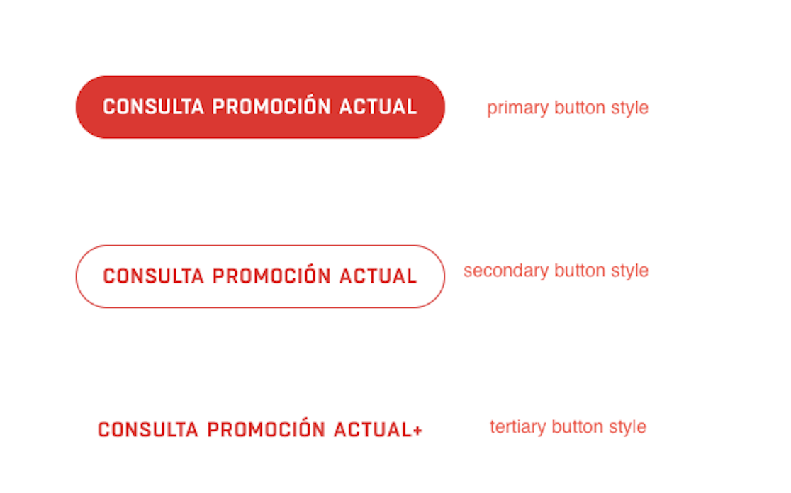
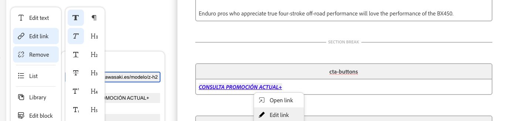
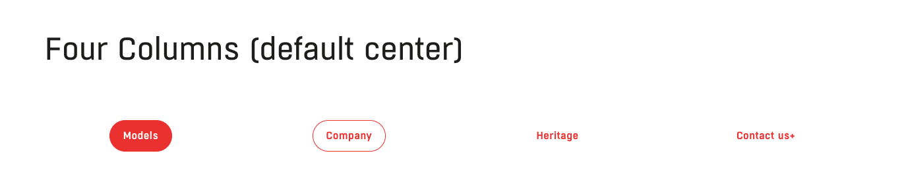

CTA Buttons
Up to four call-to-action buttons per row, with style, new-tab, and alignment control.
The CTA Buttons block lets authors place up to four buttons in a row, with flexible alignment and styling options — the standard way to add one or more prominent action buttons anywhere on a page.
1. Button styles
Button appearance follows the standard authoring convention — it acts just like formatting a link in any word processor:
- Primary – bold link → solid filled button
- Secondary – italic link → outlined button
- Tertiary – plain text link → simple text link, no button shape
These styles are applied automatically based on how the link text is formatted in the da.live authoring interface — you don't pick a style from a dropdown.
To set it up: click the text you want to make a CTA button, click “Edit link”, then choose bold, italic, or leave it plain, and paste in the destination URL. It works exactly like adding a link in a Word document.
2. New-tab markers (+ and ++)
Control new-tab behavior by adding + markers at the end of the link's visible label text:
Single plus (+) — e.g. Discover+
- Opens the link in a new tab
- Adds a screen-reader-only ARIA label (not visible to sighted users)
Double plus (++) — e.g. Discover++
- Opens the link in a new tab
- Displays a visible note after the button, e.g. “(opens in a new tab)”
- Also adds the ARIA label for screen readers
Use ++ only when you specifically want that new-tab note visible to every visitor, not just screen-reader users. If no + is present, the link opens in the same tab — the screen reader will still read the button normally.
3. Column variants (1–4 buttons)
The number of links you put in the row determines the variant:
- Single column (default center-aligned) — use when you only need one CTA.
- Two columns (default center-aligned) — two CTAs displayed side by side.
- Three columns (default center-aligned) — three CTAs in a row.
- Four columns (default center-aligned) — the maximum: four CTAs in a row.
4. Alignment options
All multi-column variants support alignment overrides:
- Left aligned
- Center aligned (default)
- Right aligned
These let you match the button row to the surrounding content's alignment.
5. Accessibility notes
+and++markers automatically generate ARIA labels for screen readers.++also displays a visible note for all users.- Keep button text concise and descriptive.
- Avoid stacking too many CTAs — use the four-column variant only when necessary.
A video walkthrough of this block (bimota-howToUse-cta-buttons-block.webm) is referenced in the internal authoring guide — ask your development contact for a copy if you'd like to see it in action.
What you fill in
| How many links in the row | Determines the column variant: single (1, default center), two, three, or four (the maximum). |
| Link text formatting | Bold = Primary button (solid fill). Italic = Secondary button (outline). Plain text = Tertiary button (text link). Applied automatically from how the link text is formatted. |
| Trailing + or ++ | + opens the link in a new tab with a screen-reader-only “opens in a new tab” notice. ++ does the same but also shows that notice visibly to every visitor. |
| Alignment | Left / Center (default) / Right. If you don't see an alignment control in your da.live toolbar for this block, duplicate an existing CTA Buttons block that already has the alignment you need, or ask a developer. |

Primary, secondary, and tertiary button styles side by side.

Setting up a CTA link in da.live: select the text, choose “Edit link”.

A three-column CTA Buttons row, center aligned.
Copy/paste snippet
| CTA Buttons | | |---|---| | [Book a test ride](/it/it/test-ride) [Find a dealer+](/it/it/dealers) | |